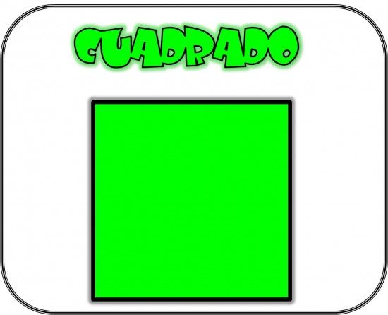
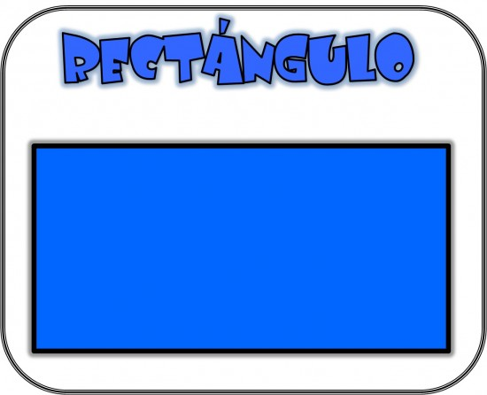
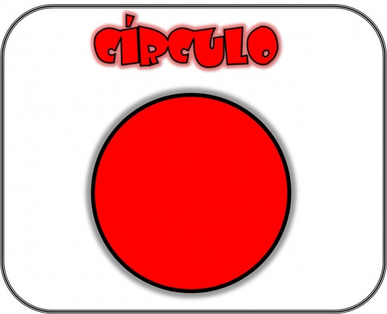

Cuando referenciamos el término bidimensional se hace alusión a las figuras que solo están compuestas por dos dimensiones: ancho y largo. Las figuras bidimensionales tienen altura y anchura, pero no profundidad. Como ejemplo claro de bidimensional, podemos señalar a figuras básicas como: Cuadrado.
Para obtener un elemento geométrico de dos dimensiones, es preciso disponer de un plano con dos ejes (X e Y) y dar valores numéricos a cada uno de los puntos que forman dicha figura. Gracias a los elementos geométricos bidimensionales podemos crear figuras geométricas planas (bidimensionales) De entre las figuras geométricas bidimensionales, podemos distinguir dos casos:
Polígonos regulares: Los polígonos regulares son las figuras geométricas bidimensionales cuyos lados o ángulos son iguales, ejemplo: cuadrado y triangulo
Polígonos irregulares: Los polígonos irregulares son las figuras geométricas bidimensionales cuyos lados o ángulos son diferentes
Para comprender mejor este tema, lo podemos hacer a través del siguiente video
| Número | Figura | Formulas | |
| Perimetro | Area | ||
| 1 |  | P = L + L + L + L | A = L x L |
| 2 |  | P = 2B + 2H | A = B x H |
| 3 |  | P = π x d | A = π x R2 |